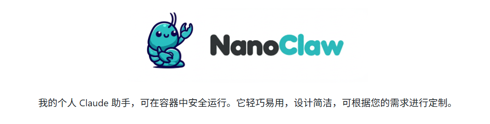

推荐阅读
* 戳上方蓝字“牛皮糖不吹牛”关注我
你是否想过，当你满心欢喜地把 Claude Code 变成自己的全能助手，给它所有文件读写权限、给它操作各种 API 的权力时，你其实是在自家的服务器大门上挂了一把“万能钥匙”？
而这把钥匙，正握在一个可能随时“幻觉”或者被提示词攻击（Prompt Injection）的大模型手里。
最近，很多圈内朋友推荐 OpenClaw。它的确很惊艳，50 多个模块、支持 15 种渠道，试图打造一个“AI 宇宙”。
但是，我却因为 OpenClaw 睡不着觉。
1. 为什么我不敢用 OpenClaw？
作为一个资深技术折腾者，安全永远是我的红线。
OpenClaw 的设计架构采用了 “应用层准入控制”。这意味着：
• 所有的逻辑都跑在一个 Node.js 进程里。 • 安全策略（Allowlist、配对码）是靠软件代码检查来维持的。 • 一旦大模型发生异常或代码逻辑有漏洞，你的宿主机、你的本地文件、你的隐私，由于缺乏 OS 级的物理隔离，全部处于“裸奔”状态。
你需要读 50 多个模块的代码才能搞清楚它到底在干什么。这种复杂性，本身就是安全的敌人。
2. 遇见 NanoClaw：极致的“物理隔离”
当我看到 nanoclaw 时，我意识到：这才是正路。
它的核心理念极其简单：Trust No One (不信任任何人)。
8 分钟读懂，一切尽在掌握
NanoClaw 的代码量少得惊人。作者 Gavriel 宣称“8 分钟即可读完”。它没有微服务、没有消息队列、没有多余的抽象层。它只是一个纯粹的 Router。

把 Claude 关进“物理笼子”
NanoClaw 最硬核的设计在于它的 容器隔离（Container Isolation）：
• 物理隔离：所有的 AI Agent 指令完全在 Linux 容器（Docker 或 macOS 原生 Apple Container）中运行。 • 按组分配权限：普通的群聊 Agent 只能看到被显式挂载的特定文件夹。 • 环境隔离：连敏感的环境变量都被严格过滤，AI 只能拿到它该拿的那部分。
即使 AI 发生了 Prompt Injection，或者有人试图通过助手攻击你的服务器，它也只能在那个狭小的容器里打转，根本无法触及你的真实宿主机。
3. 架构拆解：极简，所以强大
NanoClaw 的工作流清爽得像一股清泉：
这种架构让你从“软件级防御”升级到了“物理级防御”。
NanoClaw 最让我惊喜的不是功能，而是它的 “自进化”能力。
它不提倡配置文件，它提倡 “以代码代配置”。
• 你想改触发词？直接告诉 Claude 修改 config.js。• 你想增加功能？运行一个 Skill（比如/add-telegram），代码库会直接发生结构性重组。
它不是一个死板的软件，而是一个会随着你需求长大的数字生命。
你可以这样对它说：
“Andy，以后每个周一早上 8 点，去 Hacker News 爬一遍 AI 相关的新闻，总结成简报发给我。”
它会乖乖在独立的容器里启动定时任务，安全地完成任务。
5. 如何开启你的 NanoClaw？
如果你已经安装了 Claude Code，那么部署几乎是瞬间的事：（需要docker）
1. 克隆仓库： git clone https://github.com/gavrielc/nanoclaw.git
cd nanoclaw2. AI 自动配置：
Claude 会帮你搞定剩下的所有事：依赖、鉴权、容器初始化。claude
/setup
总结
在这个 AI 时代，我们不缺强大的工具，缺的是可信的工具。
别再在复杂的配置 and 臃肿的代码库中迷失了。如果你需要一个随时随地在 WhatsApp 上召唤、且绝对安全的 Claude 助手，NanoClaw 就是那个最优解。
如果你对 AI 编程、安全隔离感兴趣，欢迎在评论区和我探讨！
本文由“太阳鸟”深度分析，首发于 niupTang 个人博客。

AI 时代到来，要大公司变小，小公司消失。在当下最好发展一份属于自己的副业 AI + 行业做副业 已经有 7200 名小伙伴加入了，如果你也想着在 AI 时代拥有一份属于自己的 AI 副业 戳链接 加入吧！这是一个赚钱训练营，AI 技能训练营密集的圈子，你可以每年参加各种副业赚钱训练营。公众号后台回复AI 副业星球即可获取25元优惠劵。
关于AI工具
Github开源文本转语音神器Spark-TTS开源了，克隆声音仅需3秒？
github开源B站UP主都在用的下载神器！Cobalt让你轻松搬运高清素材！
Github 开源无代码的 Web 数据提取平台，2分钟内训练机器人自动抓取网页数据